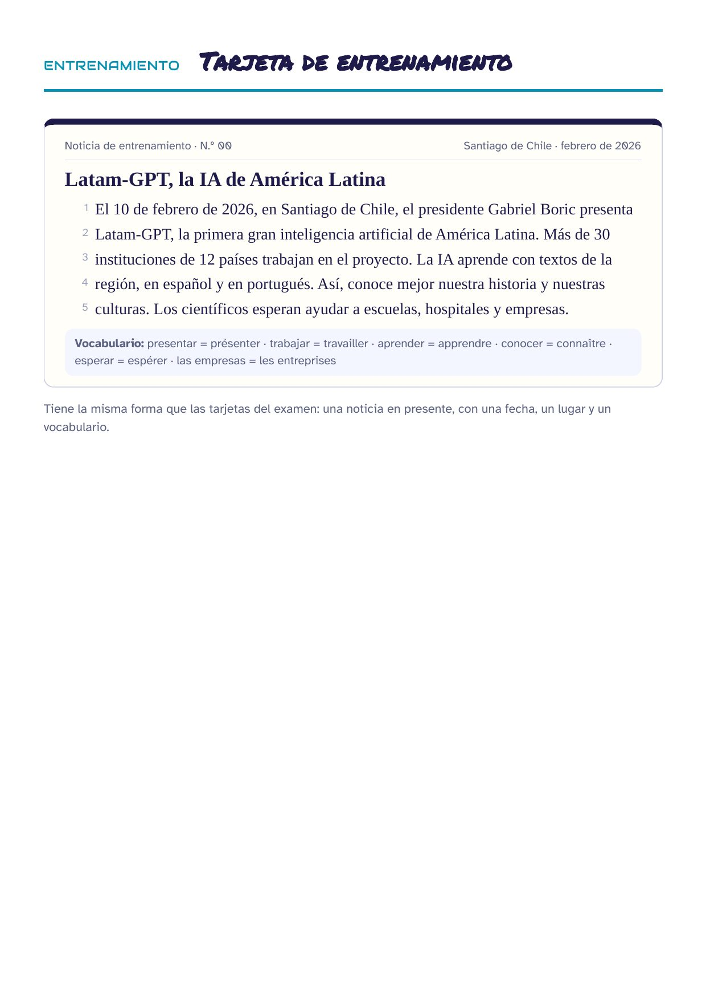
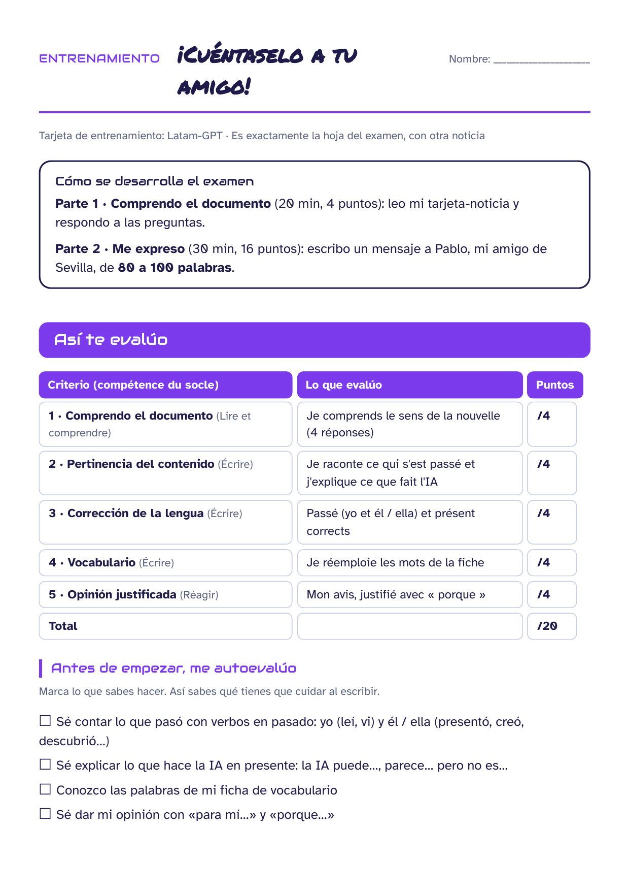
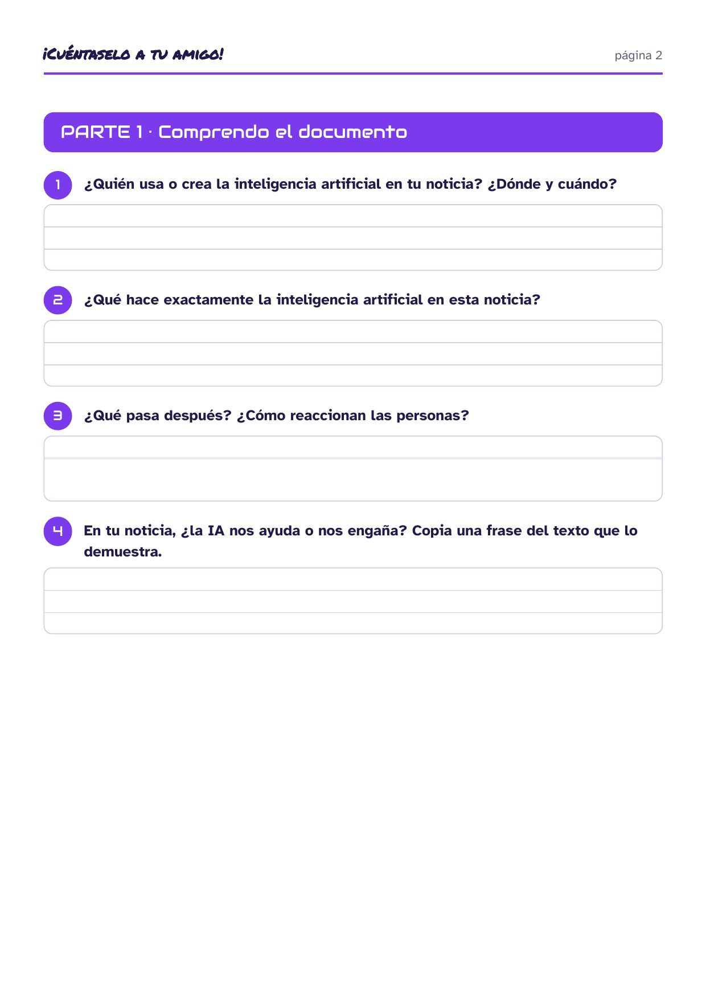
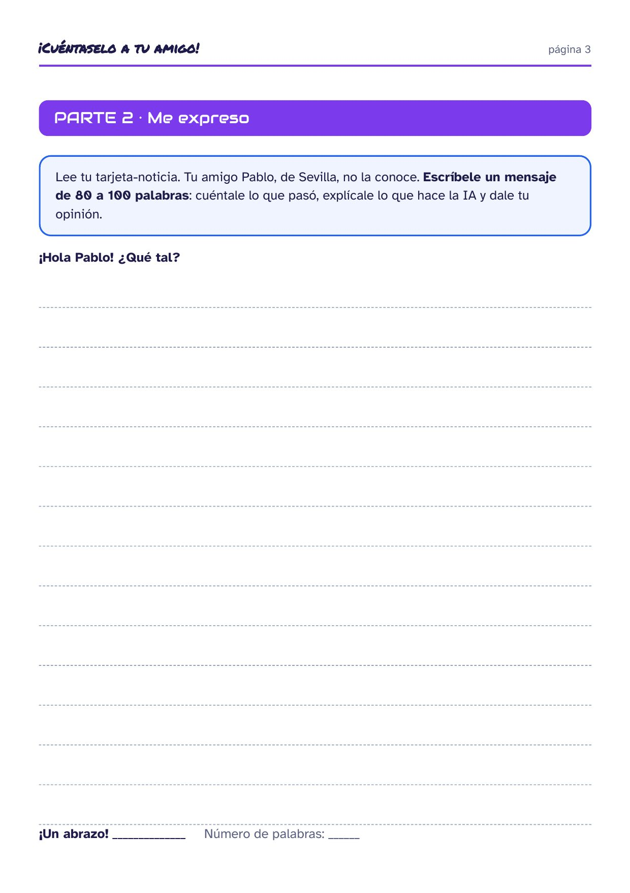
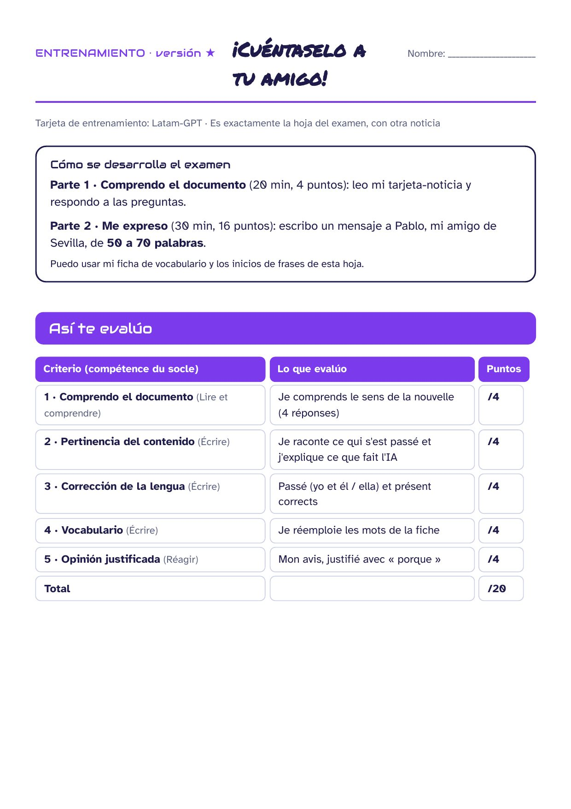
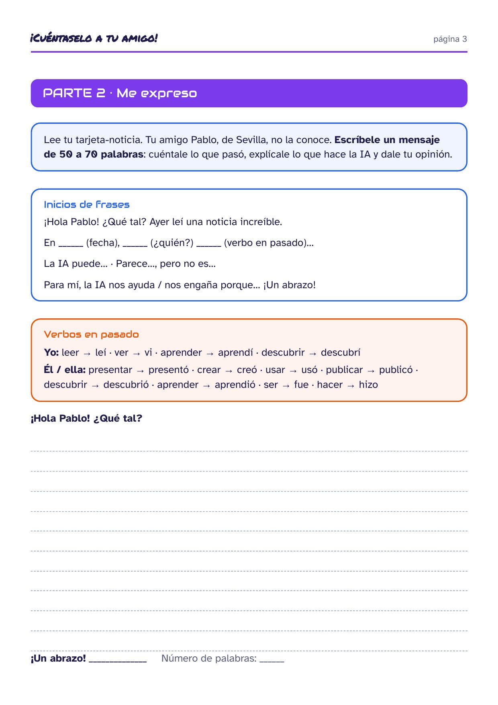
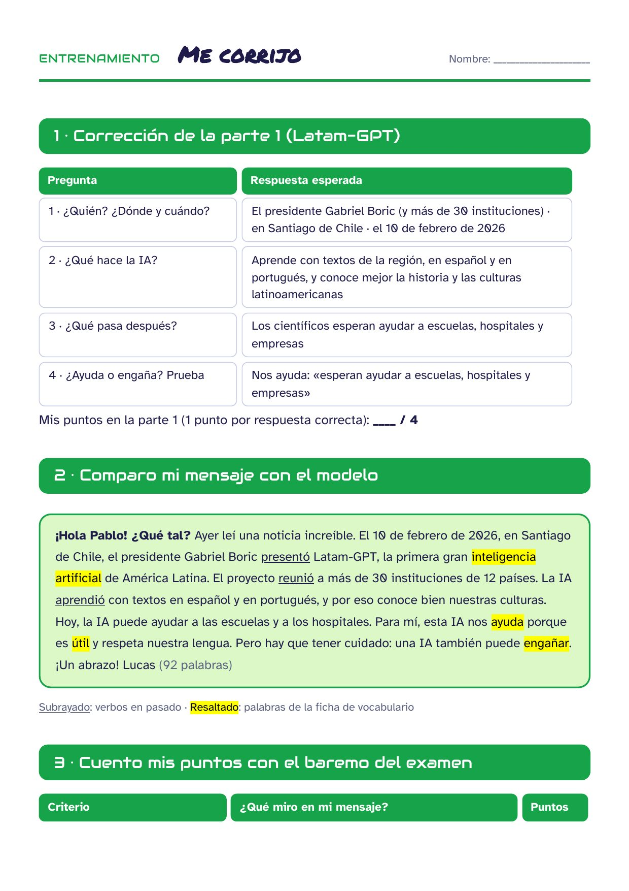
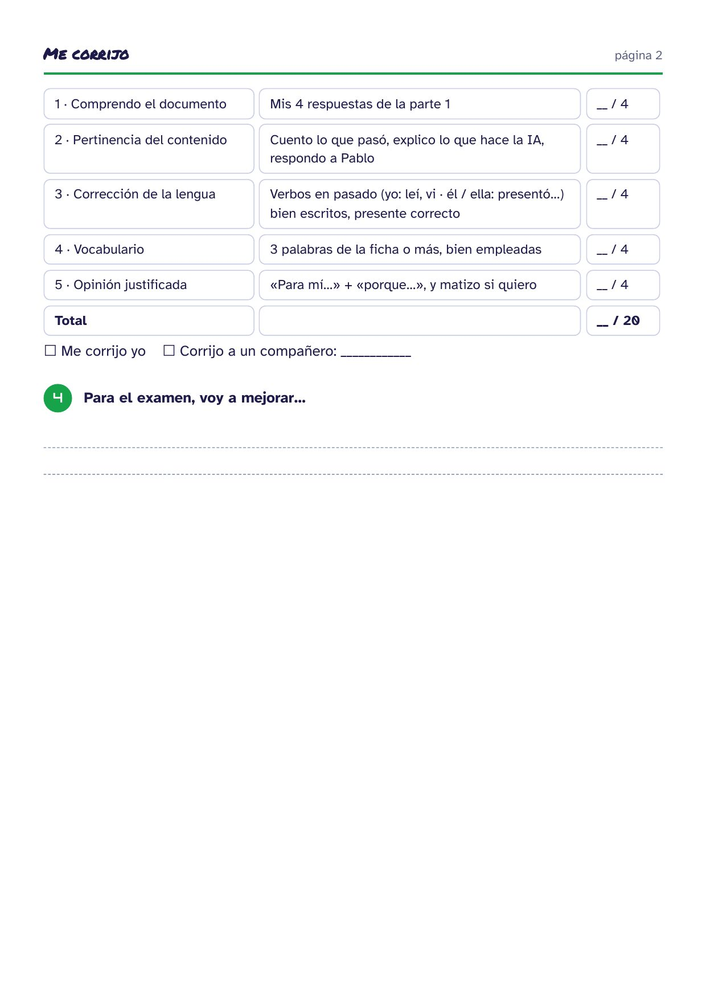

Mismo formato que la evaluación final, con otra noticia. En línea (corrección automática) o en papel.
Tarjeta de entrenamiento · Latam-GPT

Hoja de entrenamiento (3 páginas)



Hoja de entrenamiento · versión ★ (PAP)



Me corrijo (2 páginas)

